Puedes entrar en este santuario desde que llegas a la región de la torre de Lanayru, sin embargo, tendrás que superar una prueba heroica (A lomos del viento) para que la entrada aparezca. Está situada al sureste de la ciudad de los zora, en la bahía. Al dirigirte allí encontrarás a Nyel. Habla con él para activar la prueba heroica.
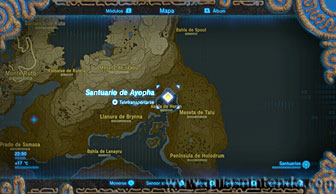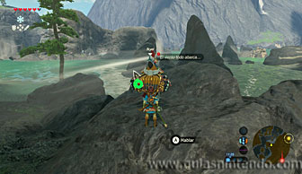
Para superarla debes crear unas corrientes de aire que te lleven volando a la entrada del santuario. Para conseguirlo tienes que destruir unas rocas blancas que hay por esta zona. En total hay cuatro grupos de rocas destruibles, aunque realmente dos de ellas solo taponan una salida de aire horizontal. Puedes destruirlas con flechas bomba o con bombas, aunque estas últimas son más difíciles de controlar por culpa del viento.
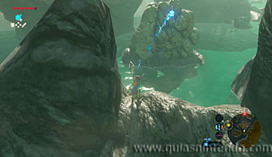 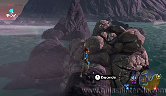
Las importantes son las que están dentro de la cueva, en el techo. Debes usar una flecha bomba para alcanzarla fácilmente. Cuando la destruyas verás la corriente pasar por el interior de la cueva.
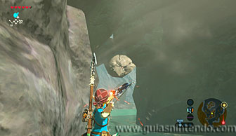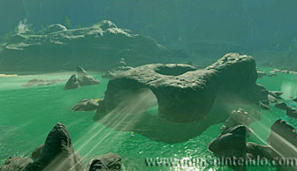
Y la segunda la que está junto a unas rocas en forma de dos picos juntos. Puedes subirte a uno de ellos y dejar caer una bomba. Esto hará que la corriente de aire que entra en la cueva sea más fuerte.
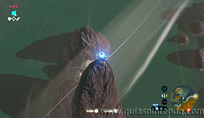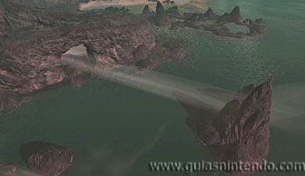
Al romper las rocas se iluminará un pedestal que hay a lo lejos. Ahora sube a la parte superior de la cueva central y localiza el pedestal.
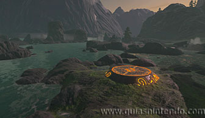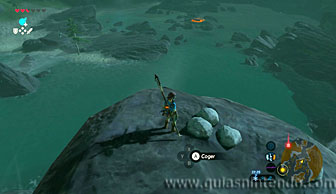
Tendrás que saltar y planear aprovechando la corriente de aire para llegar al pedestal y posarte sobre él. No debes dejarte caer desde arriba, sino que debes posarte en él sin guardar la paravela. Así aparecerá la entrada del santuario.
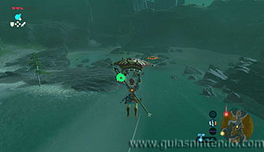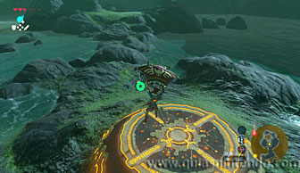
En este momento completarás la prueba heroica. Ahora solo debes entrar en
él y abrir el cofre que contiene un mandoble de fuego
antes de llegar al altar.
Cuando llegues al altar del santuario podrás examinarlo para obtener un símbolo de valía.
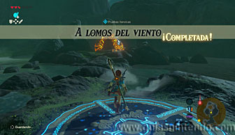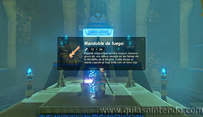